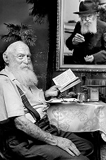

Man of Faith, Man of Action
We were shocked to hear of the passing of R’ Zushe Rivkin a”h, one of the more outstanding personalities amongst Lubavitcher Chassidim, who merited many kiruvim from the Rebbe and was a walking torch of fiery emuna in the coming of Moshiach and the hisgalus of the Rebbe MH”M. His entire life was ded

Sunday night, 17 Adar, despite the late hour, hundreds of residents of Kfar Chabad escorted R’ Zushe to his eternal rest. He is not survived by any children.
His bier was placed near the Aron Kodesh in the Beis Menachem shul of which he was one of the founders. The crowd responded with “amen” to the Kaddish recited by the rav of Kfar Chabad, Rabbi Mordechai Shmuel Ashkenazi. They all proclaimed “Yechi” with which R’ Zushe lived every moment of his life.
Nobody could believe that R’ Zushe, who had immersed that morning in the mikva that he built in Beis Menachem, davened Shacharis and joined the regular shiur, had passed away. The phrase “Zushe Rivkin of blessed memory” was just unimaginable.
R’ Zushe was a symbol of fiery, constant emuna. It is no exaggeration to say that this shone from his eyes, and he breathed perpetual anticipation of the hisgalus of the Rebbe. Whoever met him was asked when Moshiach would be revealed, and he asked this sincerely. He was a model of emuna and hiskashrus to the Rebbe.
R’ Zushe was born on Yud-Tes Kislev in Homil in White Russia. His parents were R’ Yechiel Yosef and Mrs. Sheina Rivkin. She was the daughter of the Chassid, R’ Moshe Nissan and Mrs. Chaya Sarah Azimov from Klimovitz.
Despite the law, his father refused to send his children to a Russian school. R’ Zushe learned Torah secretly.
“I learned by R’ Yisroel the Shochet; we learned in a cellar. Each time, one of the children stood outside in order to warn us if suspicious people were approaching. The fear was enormous.”
TWENTY PEOPLE LIVING IN ONE ROOM!
The Germans invaded Russia in the summer of 1941. The Rivkin family, along with tens of thousands of people, including many Chassidim, fled the scene of battle and traveled deep into Russia. After much wearying travel, they arrived in Tashkent in Uzbekistan.
The financial situation of the refugees was bleak. R’ Zushe told about the days soon after their arrival in Tashkent:
“The situation was miserable. We were twenty members of an extended family living in one room! It was an Uzbeki home which did not have a floor, and people slept on straw that was scattered on the floor. The men slept on one side of the room and women on the other side.”
It was only after a long period of time that each family found its own living quarters and life began to return to normal.
At the end of the war, Lubavitcher Chassidim began escaping from the Soviet Union via Lvov by using false Polish passports. R’ Zushe and his parents along with other relatives traveled to Lvov in order to try their luck. At a certain point, R’ Leibel Mochkin, a member of the Escape Committee, told them about an opportunity of leaving Russia via Zlotchov.
They spent several weeks in Poland and then traveled to Czechoslovakia. From there they were smuggled to Austria in closed trucks where they lived in a refugee camp. This was a way station until they arrived in Paris where they lived for two years. During their stay in Paris, R’ Zushe learned in Yeshivas Tomchei T’mimim in Brunoy.
After two years in France, the family made aliya. At first they lived in the Beer Yaakov refugee camp and then they moved to Kfar Chabad which was just being founded at the time.
R’ Zushe was only 17 when he and his family moved to Eretz Yisroel and settled in Kfar Chabad. They were among the founders of the Kfar. R’ Zushe lived through the early travails of the establishment of the village, but the fire of emuna and the Rebbe’s constant encouragement helped him and the other residents overcome all the hardships.
R’ Zushe married Naomi Ziegelboim on 15 Sivan 5714/1954. The kalla’s family lived in Chadera at the time. This was the first time that its residents witnessed an authentic Chassidic simcha from up close.
As was the custom in those days, the wedding took place in the yard. The kalla’s parents began preparing for the wedding long before that, and the neighbors pitched in with the cooking.
A RESTAURANT WITH THE REBBE’S BRACHOS
R’ Zushe and his wife opened the Yeshurun restaurant in Tel Aviv about fifty years ago.
“We opened the restaurant after my father passed away and my mother ran it. At that time, the area was entirely religious and we made a nice living from the restaurant. However, eight years later, in 5730, the situation changed and we decided to sell it. My brother, who was traveling to the Rebbe in honor of Yud Shevat, had yechidus and told the Rebbe that we planned on selling the restaurant.
“The Rebbe asked who we were selling it to and my brother said to Poilish Chassidim. The Rebbe was dissatisfied with this response and asked whether the level of kashrus would be the same as it was with us.
“When my brother said it would probably be the same, the Rebbe asked him whether he was willing to take responsibility for that. My brother said he could not take responsibility for others’ actions. The Rebbe concluded the discussion by saying, ‘It’s out of the question! It is Lubavitch of Tel Aviv!’
“At the farbrengen, the Rebbe gave out mashke to all directors of mosdos. The Rebbe turned to my brother and said: Rivkin, You have a restaurant in Tel Aviv! The Rebbe gave him a bottle of mashke too and said, ‘This is, no doubt, a segula for parnasa.’”
R’ Zushe himself visited the Rebbe a few months later. After yechidus, in which he received special brachos regarding the restaurant, the Rebbe sent out a bottle of mashke for him with a note which said: In addition to being in yechidus, there is also mashke for the restaurant. I will mention you at the gravesite [of the Rebbe Rayatz].
The Rebbe’s encouragement to continue maintaining the restaurant did not stop. A few years later, at Kos Shel Bracha on Acharon shel Pesach, R’ Zushe received a bottle of wine for the Beis Menachem shul. As he left, the Rebbe called him back and said: And from this bottle that I brought for Beis Menachem, take for the restaurant too.
He poured the wine into plastic bottles and gave it out on special occasions in his restaurant. One day, someone walked into the restaurant, and after eating he said to R’ Zushe, “Do you know how I came here? I was at the Lubavitcher Rebbe for yechidus and before I left, the Rebbe said to me that since I was going to Eretz Yisroel and would be in Tel Aviv, I would surely go to Rivkin’s restaurant and eat there!”
At one time, R’ Zushe thought of changing the name of the restaurant from Yeshurun to something more Lubavitch like U’faratzta. He asked the Rebbe and the answer was: Since you have been successful until now under this name, you should continue to have success under this name!
Another fifteen years went by and R’ Zushe was getting older and the work at the restaurant was becoming difficult for him. He decided to leave the restaurant. A routine medical exam, after which the doctor recommended that he stop working in the restaurant for the sake of his health, contributed to this decision. He took the doctor’s written recommendation and sent it to the Rebbe. He included a letter from his wife in which she asked what to do with the restaurant.
The Rebbe’s response was: Based on this, you should take (hire) an assistant and continue with it. This is like the work of Avrohom – Avrohom was one. I will mention it at the gravesite.
Obviously, after an answer like this, R’ Zushe did not give up the restaurant but continued in the role that the Rebbe described as “like the work of Avrohom.”
Indeed, R’ Zushe’s restaurant – and this is an open secret – was not merely a restaurant, but a Chabad mosad in every respect.
It started with one little boy who learned in a nearby school. He passed by R’ Zushe’s restaurant and felt thirsty. He decided to go inside and ask for a drink of water. That is when R’ Zushe had the idea, just like Avrohom. He took out a drink, poured a cup for the boy and asked him to say a bracha. The boy said the bracha and drank, and R’ Zushe was happy – a Jewish boy had said a bracha before drinking. The boy apparently told his friends about the nice Lubavitcher who gave him a drink and merely asked him to say a bracha first, because more and more thirsty children began to show up. Within a few weeks, the place was humming with children. R’ Zushe was happy about this opportunity that came his way, to implant emuna in young children, and he started buying candies for them.
One time, when he was at yechidus, R’ Zushe told the Rebbe about his private educational endeavor and asked the Rebbe for a dollar for the children. “I told the Rebbe that I valued the Rebbe’s dollar at $30,000 and so, if he would give me the dollar, all the candies I would buy would be in exchange for the Rebbe’s dollar and would surely have the segulos of the Rebbe’s dollar! The Rebbe smiled and gave me two dollars, saying, ‘Kiflaim l’tushiya’ (double success).”
From then on, R’ Zushe gave every child who came in “a candy from the Rebbe Melech HaMoshiach” with bitachon that when a Jewish child eats a candy that was bought with money from the Rebbe, it has both a short term and long term effect. R’ Zushe’s brother once told the Rebbe that R’ Zushe was giving the children candy, and the Rebbe suggested that occasionally he give them other things so they could recite other brachos, too. This is why R’ Zushe sometimes distributed cookies, so the children could say “mezonos.” In later years he gave out bags of Bamba – “So that I relate to children of today,” he said with a smile.
A CANDY THAT
LED TO T’SHUVA
One day, a religious looking Jew came to the restaurant with his wife and children. It was the afternoon, and while they sat and ate, children started coming in groups to say p’sukim. The man watched. “I noticed a look of longing in his eyes,” said R’ Zushe, “but little did I imagine the story he had to tell me. He waited until the children stopped coming and going and then he got up and said to me, ‘R’ Zushe, I must thank you for my being a Chabad Chassid today.’
“I didn’t know him and did not remember when I had been mekarev him to Chabad. He didn’t give me time to consider this further, but explained, ‘Twenty years ago, I would come to you every day and you would instill faith in me. As a result of everything I absorbed from you, I looked into Judaism in general and Chassidus in particular and I eventually became a Chabad Chassid! I came here and brought my wife and children in order for them to see where I got inspired.’”
He wasn’t the only one to be inspired. Dozens, if not hundreds, of children were treated kindly by R’ Zushe, and they were inspired as well. It is hard to know precisely the extent of his influence but it is definitely extensive. Time will tell.
Who can begin to assess the effect of the p’sukim and the brachos said with the children, including the effect on the customers in the restaurant who watched how a person devoted his time, energy and money to children in this way. It happened more than once that a customer went over to R’ Zushe and told him that they started putting on t’fillin or doing other mitzvos thanks to the p’sukim of the children!
The encouragement that R’ Zushe and his restaurant received did not stop, and in the winter of 5752, when he passed by the Rebbe for “dollars,” the Rebbe said: You have a restaurant in Tel Aviv, and with a big smile he gave him an extra dollar.
A few months later, in Adar Rishon, R’ Zushe went for dollars again. The Rebbe asked him whether the restaurant was open on Pesach. Although R’ Zushe knew that opening the restaurant on Pesach would entail tremendous work and a lot of money, he said, “In general it is closed, but if the Rebbe wants, in order to fulfill the Rebbe’s wishes, money doesn’t matter and it will be open.” The Rebbe asked, “What happened last year?” R’ Zushe said the restaurant had been closed. The Rebbe smiled and said, “Nu, in that case, we won’t make changes.”
THE REBBE’S INSTRUCTION ABOUT A SIGN
After the Rebbe announced as a prophecy that “Hinei Zeh (Moshiach) Ba,” R’ Zushe hung a sign on the front of his restaurant which said, “Hichonu! Hichonu! Hichonu! L’Bi’as HaMoshiach” (Prepare for the Coming of Moshiach).
Ten minutes before Shabbos, R’ Zushe sent a fax to the Rebbe in which he reported about the sign. He asked, “How long will we need this sign? When will we already merit to proclaim that behold, Moshiach came?”
A few hours later, before Shabbos in New York, the Rebbe responded with: Add “hinei, hinei Moshiach ba.” In a conversation held later, R’ Groner told him that the Rebbe said this as a horaa (instruction)!
R’ Zushe immediately carried out the horaa. Right after Shabbos, he ordered a sign with the words, “Hinei! Hinei! Hinei! Moshiach Ba.” That very same week, the second sign was hung in front of the restaurant. The signs were lit up and could be seen at night too.
MITZVOS ON THE TRAIN
At a certain point, the trip from Kfar Chabad to Tel Aviv became difficult for R’ Zushe and he started taking the train. A Chassid like R’ Zushe would not waste the opportunity these trips presented to him, and on the way to Tel Aviv and back he enabled people to do the mitzva of tz’daka. R’ Zushe related:
“A few years ago, I met a very tough woman who regularly took the train at the same time as I did. Out of the corner of my eye I could see how she watched what I was doing. Before I reached her, she hissed, ‘I do not give money.’ So I said, ‘I will give for you, and you will see what a good day you will have.’ She kept quiet, but I could see she was trying not to smile.
“A few days later she was willing to put money in the pushka herself. At a later point, she added a second coin for her husband. Some time after that she put in another two coins for her two children. One day, she told me that she had a new grandchild. From then on, she put five coins in the pushka.”
THE REBBE AGREED TO HAVE THE SHUL NAMED FOR HIM
In the 70’s, when Kfar Chabad was growing and the shuls were crowded, the decision was made to build a new, spacious shul. R’ Chaim and R’ Zushe Rivkin were on the building committee.
When the plans were ready, R’ Chaim traveled to the Rebbe and showed them to the Rebbe in yechidus. The Rebbe spread the blueprints on the desk and reviewed them. The Rebbe asked when the construction would be completed and R’ Chaim said it depended on how much money they had to work with. The Rebbe once again asked how long the construction would take and R’ Chaim said that they had only 5000 liros and the speed of construction depended on their finances. When the Rebbe asked a third time, R’ Chaim did not know what to say. He realized that the Rebbe wanted the shul to be built quickly without considering finances.
“When R’ Chaim came back,” recounted R’ Zushe, “with the changes the Rebbe had made on the blueprints, we convened the building committee. During the meeting, it occurred to me that we should ask the Rebbe if he would agree to have the shul named Beis Menachem for his name. At that time, there was not a single mosad in Eretz Yisroel or anywhere else in the world that was named for the Rebbe.
“When I was in yechidus, I asked the Rebbe whether he would agree to let us use his name for the shul in Kfar Chabad. I said we were willing to donate a large amount of money towards the building. The Rebbe lifted his hand and said decisively, ‘I agree, but my name is worth more than gold.’ I told the Rebbe that I was not limiting the amount of money; the main thing was for the Rebbe to allow us to put his name on the shul.
“At that yechidus, I told the Rebbe that I had bought a Torah. I asked when to make the Hachnasas Seifer Torah. The Rebbe told me, ‘You should be doing it on the yahrtzait of your father on Rosh Chodesh Av, but since time is short [this was in Tammuz, and although I pointed out that everything was ready and even the mantle was ready, the Rebbe said:], do it on Chaf Av, my father’s yahrtzait.’
“I returned to Eretz Yisroel and arranged a Hachnasas Seifer Torah for Chaf Av. In the evening, R’ Avrohom Lieder and I called the Rebbe’s office to inform him of this. After waiting twenty minutes the Rebbe came on the line. R’ Lieder, who did not know that the Rebbe was listening, said to R’ Chadakov that since R’ Zushe Rivkin had been to the Rebbe in yechidus and had asked that the Rebbe’s name be used for the shul and the Rebbe happily agreed, we wanted to use this special day of Chaf Av to name the shul for the Rebbe.
“He suddenly heard the Rebbe’s voice saying, ‘You have permission for this.’ R’ Avrohom, all shaken up, exclaimed, ‘Oy, the Rebbe is speaking!’ He did not hear the Rebbe say that R’ Chadakov would continue the conversation. The Rebbe went off the line.”
THE REBBE PROMISED GOOD NEWS AND THE MONEY DOUBLED
The Rivkin brothers experienced miracles in the building of the shul. R’ Zushe told about one of the miracles:
“It was after we had finished the entire building and all that remained to be done was to put up a marble facade. At this point, the money we had left was enough to cover half the shul. At first, we thought of signing a contract with the contractor to resurface only half the building, but then we decided that Hashem would help and we signed a contract to cover the entire building with marble.
“At this time, the mara d’asra, R’ Mordechai Shmuel Ashkenazi, went to the Rebbe. I gave him a note in which I informed the Rebbe that we had signed a contract to resurface the entire building and asked for a bracha for parnasa.
“When he had yechidus and gave the note to the Rebbe, the Rebbe opened it and said with a smile: Very soon he will have good news to tell me.
“Listen to what happened next. We had hidden all our money in an excellent hiding place. In the scrap iron warehouse was a cast iron table with legs made of iron pipes, whose weight was over half a ton. At a certain point, we brought a forklift to lift the table and then we lowered the bundle of money into the pipe that served as a table leg.
“On the day that the contractor finished his work and had to be paid, we went to the warehouse, brought the lift and after lifting the heavy table we took out the bundle of money. As far as we knew, nobody had touched the money since we had hidden it. However, when we finished counting the money, we were amazed to see that the amount had doubled!
“Till today, I have no rational explanation for how the money doubled. That is how we had the full amount we needed to give the contractor.
“A year later, when R’ Ashkenazi went to the Rebbe again, I gave him another note. This time, it contained good news. As soon as he entered the Rebbe’s room, the Rebbe asked him, with a light smile on his lips: ‘Did you bring me the good news?’”
REQUEST FOR THE REBBE: THAT HE BE REVEALED AS MOSHIACH!
When Beis Menachem was completed as a magnificent structure, worthy of the Rebbe’s name, R’ Zushe and R’ Avrohom Lieder called the Rebbe’s office. This time, they had a daring request – they wished for the Rebbe to come to the dedication of the new shul and be revealed as Moshiach.
R’ Zushe told about this telephone call:
“The Rebbe’s answer surprised us. It said: It needs to be in writing. We told R’ Chadakov that time was short and did not enable us to write a letter to the Rebbe before the Chanukas Ha’bayis, but he did not back down. The Rebbe said that an invitation like this needs to be in writing.
“The entire conversation was recorded and we played it for the senior Chassidim in the Kfar. They immediately opened the mikva and they all went to immerse themselves so they could sign a letter asking the Rebbe to participate in the dedication of the shul and be revealed as Moshiach. After they all signed, R’ Moshe Slonim said to me, “Zushe, go!” I was willing. I thought that since I had paid for the Rebbe’s name to be on the building, it was fitting for me to invite the baal ha’simcha.
“I went to 770 and right after Shabbos, when the Rebbe left the zal for his room, I gave the Rebbe the signatures. The Rebbe smiled and accepted them. Later on, when the Rebbe left his room for home, I stood next to the office door. The Rebbe saw me and wished me a good week. A few hours later, when I returned to 770, I noticed that the light was on in the Rebbe’s room. It was very unusual for the Rebbe to return to his room in those days. When the Rebbe came out, he wished me a good week once again.
“The next day, the Rebbe took out $600 that was designated ‘for the signatories only.’ When I asked R’ Chadakov to give me the signatures to look at so I would know to whom to give a dollar, he said he could not give it to me since the Rebbe had put them in his personal archives and he had no permission to take them.
“The next day, I went to the El-Al offices to arrange my return ticket and suddenly heard that the Rebbe was looking for me. The Rebbe had asked that I be present when the matzos were sent to Eretz Yisroel. I went to 770 right away and saw R’ Yisroel Leibov and R’ Menachem Mendel Garelik. When I arrived, the Rebbe said we should go to the library where we would receive the matzos. After the Rebbe separated the packages that were designated for Eretz Yisroel, he said to me, ‘Since you are the gabbai, you will receive a gift from me for the Chanukas Ha’bayis.’ The Rebbe opened one of the boxes and took out a Torah Crown.
“Then the Rebbe asked me to accompany him to his room. The Rebbe stood next to his desk, took out another $1200 and said: Give this only to those who signed. Those who sign later will receive from His full and open hand. If any remain, do good things with it.
“Years later, in 5752, I had the idea of selling the remaining dollars and using the money to build a palace for the Rebbe. I asked the Rebbe in a letter whether I could sell those dollars in order to build him a palace and whether I could guarantee brachos in the Rebbe’s name to whoever bought the dollars from me. The Rebbe’s answer was: ‘You can promise, but it should be a large sum of money.’”
SUDDEN FARBRENGEN IN HONOR OF R’ ZUSHE’S SPECIAL SHLICHUS
The special Torah that was written by Anash in Eretz Yisroel in honor of the Rebbe and Rebbetzin, was finished in Kislev 5741. For the siyum, thousands of Chassidim signed that they invited the Rebbe and Rebbetzin to Eretz Yisroel to attend the siyum and Hachnasas Seifer Torah that was written in their z’chus, and the Geula should take place already.
R’ Zushe was picked to represent all of Anash in Eretz Yisroel. He quickly informed his son-in-law R’ Aharon Dov Halperin who was in the United States at the time and asked him to tell the Rebbe.
An answer was not forthcoming and it was only later that night, right before the Rebbe went home that he responded with the following: His intention is a desirable one, but the Torah has mercy on Jewish money and therefore you should remain in Eretz Yisroel and use the travel money for tz’daka.
R’ Halperin called an operator and said he wanted to call Israel, but when he was finally connected he learned that his father-in-law was already on his way to New York. He decided not to tell his father-in-law about the Rebbe’s response so as not to aggravate him.
They came to 770 a few minutes after 6:30 in the evening. Word spread that R’ Zushe had brought signatures with him. R’ Zushe stood near the entrance to the office and a few minutes later there was a hush in the hallway between the “lower Gan Eden” and the beis midrash. The Rebbe had returned from his house.
The Rebbe entered 770, looked to the right, and when he saw R’ Zushe, he smiled broadly. In a very unusual move, the Rebbe nodded his head and whispered something that sounded like “Shalom Aleichem.”
The Rebbe was expected to daven Maariv in half an hour and R’ Zushe’s plan was to attend Maariv (then in the small zal upstairs), and before the t’filla was over to stand next to the “lower Gan Eden.” He left the bundle of signatures and the silver Yad in his pocket so that R’ Groner would not suspect that he was planning on approaching the Rebbe.
Right after Shmoneh Esrei, R’ Zushe squeezed his way between the benches and tables, slipped out to the corridor from the other door (exiting from the small room off of the zal) and stood next to the elevator near the door to the “lower Gan Eden.” The crowd sensed that something was afoot and the suspense could be felt in the air.
In the corridor, they answered “amen” to the final Kaddish after Maariv. The Rebbe left the zal and then the door to the “lower Gan Eden” opened. When the Rebbe walked in, R’ Zushe managed to slip in behind the Rebbe as he took the envelope out of his pocket.
WHEN IS THE PLANE TAKING OFF?
The following conversation (in Yiddish) then ensued:
Rebbe: Sholom Aleichem R’ Zushe, when are you going back?
R’ Zushe: G-d willing, tomorrow at four in the afternoon.
Rebbe: When does the plane take off?
R’ Zushe: At six.
(R’ Zushe gave the Rebbe the signatures).
Rebbe: Are these new signatures?
R’ Zushe: New signatures.
Rebbe: Do the signatures have anything to do with the Seifer Torah?
R’ Zushe: Yes, it is an invitation to the Rebbe and Rebbetzin.
Rebbe: When do you need to leave here?
R’ Zushe: The plane leaves at six.
Rebbe: In honor of the Torah, we will have a short farbrengen tomorrow before you leave. Tonight there is a wedding and so a farbrengen cannot be made. But you came special from Eretz Yisroel and so we will make a goodbye party tomorrow between 2 and 2:30 in the afternoon. I will say a few words and the farbrengen will continue until Mincha. After Mincha, you will be on your way. Leave the silver Yad with me and I will bring it tomorrow to the farbrengen table and then return it to you.
Did you rest up from the trip yet or do you feel as though you did not travel? In any case, you will be the cause for another farbrengen. Mincha is at 3:15 so the farbrengen will be at 2:15. Now go and rest and a big yashar ko’ach to you. All should be well, and by tomorrow Moshiach can come.
R’ Zushe: Together with the Rebbe.
Rebbe: Then too, we will go with you.
Rebbe: A big yashar ko’ach in the name of all those who sent you and we will meet tomorrow at the farbrengen which will take place at 2:15. A big yashar ko’ach.
TREMENDOUS TENSION AND EXCITEMENT
While this conversation took place in the “lower Gan Eden,” there was tremendous tension outside. The pushing in the corridor was reminiscent of the pushing during the bracha of the bachurim on Erev Yom Kippur. Everybody eagerly waited for the moment when the door would open again.
The moment finally came. The door of the “lower Gan Eden” opened and R’ Zushe walked backward, facing the Rebbe who entered his room. When he turned around to the crowd, he seemed jubilant. It seemed as if words failed him and a huge smile took their place. He finally managed to get out the words that instantly electrified the crowd. “Tomorrow at 2:15 there will be a special farbrengen!”
A spontaneous dance accompanied by singing began, including all those who were present in 770. It is hard to describe the tremendous excitement and simcha.
Within minutes, news about the surprise farbrengen had spread like wildfire among all Lubavitchers in Crown Heights and all Chabad centers.
In the course of the evening, they brought in, as per his request, two Torah Crowns so he could choose one of them, and the Rebbe chose both. The Rebbe said that the upper part of one of them was beautiful while the lower part of the other one was beautiful. He wanted the silversmith to make a crown out of those two sections.
This crown was the Rebbe’s gift even though in Eretz Yisroel they had already prepared a crown for the Torah. The Rebbe also ordered from the silversmith a silver Yad for the “Seifer Torah of Moshiach.”
The next day, Tuesday the 17th of Kislev, when the Rebbe arrived in 770, he announced that the farbrengen would take place at 2:30 and last one hour.
At the appointed time, the Rebbe walked in accompanied by mighty singing of “We Want Moshiach Now,” while holding his Siddur, a paper bag with the signatures, and a silver Yad. He also held a box containing a silver Yad for the Seifer Torah of Moshiach. He was followed by R’ Leibel Groner who held a sparkling silver crown, which he gave to the Rebbe.
The Rebbe began the sicha by mentioning a letter of the Rebbe Rayatz in which he wrote that a few days before the completion of a Torah it is announced in the city. The Rebbe said that today, when we have many methods of communication, the news should be widely publicized, especially as this is a Torah that unites all the Jewish people.
The Rebbe spoke about the greatness of writing a Torah, especially one that will be completed in Eretz Yisroel and is connected to Yud-Tes Kislev. He also spoke about the fact that the inspiration to have the Torah written came from the women and only afterward did the men take action, which is like what took place at the Giving of the Torah about which it says, “Thus shall you say to the House of Yaakov” – they are the women, and only afterward, “And tell the B’nei Yisroel” – the men.
The Rebbe went on to say: We wish to give merit to everyone in the completion of the Torah and therefore a crown is being given, the price for which everyone in the congregation has a share. [The Rebbe explained how this is accomplished by way of the Torah law that allows one to acquire a benefit for someone else even without that person’s knowledge, and concluded:] This is material participation which is in addition to spiritual participation in the completion of the Torah.
At the end of the sicha, the Rebbe said: Since the gabbai of the shul is here, as he came on this mission for the shul and in general was involved with it, we will make him a “shliach l’holacha” (emissary for delivery) to take the crown together with money for tz’daka on behalf of all those at the farbrengen and on behalf of everyone here, so he will distribute the money to tz’daka in Eretz Yisroel on behalf of everyone here.
After the sicha, the Rebbe gave R’ Zushe a cup of mashke to say l’chaim and gave him a bottle of mashke and told him to distribute it to the participants at the siyum and Hachnasas Seifer Torah.
The Rebbe got up and gave him the crown and said, “On behalf of the entire congregation.” He gave R’ Zushe the Yad and money for tz’daka to be given in Eretz Yisroel.
R’ Zushe said the Rebbe should merit to place the crown on the Torah in Eretz Yisroel and the Rebbe answered, “amen.”
Then the Rebbe called upon the silversmith who made the (first) crown in Eretz Yisroel and poured him l’chaim and blessed him that he should make many crowns for many Sifrei Torah and he should learn and fulfill what it says in the Torah.
At the end of the farbrengen, after the Rebbe said they should sing some niggunim, he said: Let us daven Mincha now and as the Gemara says, “A person should always be careful with the Mincha prayer, for Eliyahu HaNavi was not answered except at Mincha.” Let us all proclaim (obviously, without enunciating Hashem’s name) “Hashem Hu HaElokim, Hashem Hu HaElokim …”
He then concluded with a bracha about the Geula.
At this farbrengen, the Rebbe said a maamer, “Pada B’shalom Nafshi.” The maamer was edited by the Rebbe and printed in the kuntres “Siyum V’Hachnasas Seifer Torah.”
HE “LIVED” MOSHIACH
R’ Zushe was a man slight in stature, but his tremendous work can fill volumes. We have yet to examine his work in founding the Kollel Tiferes Z’keinim “Tiferes Menachem” which is in Beis Menachem, nor the many unusual kiruvim he received from the Rebbe like at the Hachnasas Seifer Torah in 5748 and other events.
One always saw joy on his face but there was sadness in his heart after the passing of his only daughter Bracha Halperin as a young woman, after a lengthy illness and without leaving any children. He experienced many other sorrows in his life. He joked around and never complained about his bitter lot.
Above all else, there was his fiery faith in the Rebbe as Melech HaMoshiach and his imminent hisgalus. He truly felt the hardship of galus and at the same time lived a full life of emuna and anticipation for the Rebbe’s hisgalus. He dared to say this out loud to the Rebbe even before anyone else had worked up the courage, and the Rebbe accepted it from him.
There is no question that R’ Zushe is even now insisting upon the immediate hisgalus of the Rebbe as Moshiach in his signature style – not demandingly, but with utter simplicity, the way he approached people on the street and said, “Nu, did he come?” and when they asked him in wonderment what he meant, he would shrug and say, “Moshiach!”
Avremele Rainitz. "Man of Faith, Man of Action." Beis Moshiach, no. 834 (May 16, 2012).